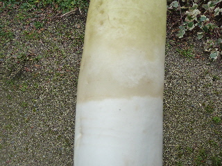
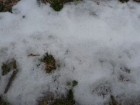
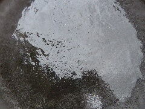
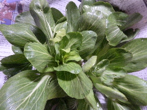
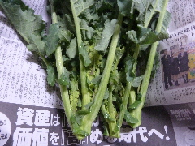
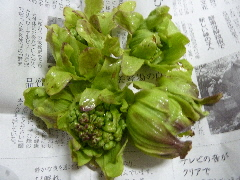
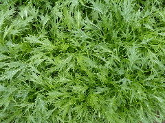

大根が凍ってた。
2016/01/31
寒さで、大根がこおっていました。

地面の中は大丈夫ですが、地上に出ている部分が凍っています。
冬は寒くて当たり前なんだから、こんなこともありますよ。
2016/01/31
寒さで、大根がこおっていました。

地面の中は大丈夫ですが、地上に出ている部分が凍っています。
冬は寒くて当たり前なんだから、こんなこともありますよ。
2016/01/24
何年に1度の寒波だそうです。

今のところ雪は降っていないですが、以前に降った雪が解けずに残っています。

水はしっかり凍ってます。
氷が厚いです。
日中の氷点下ってここらへんではあまりないので、なんか新鮮でした。
2016/01/17
寒いので野菜洗いは辛いな。

チンゲンサイって葉っぱと葉っぱの間に土が入って面倒です。
2016/01/17
まだ小さいので収穫するかどうか迷ったんですが、収獲しました。

若いので柔らかいかと思ったんですが、寒い時期にちょっとづつ育ったものなので、ちょっと堅かったです。
2016/01/17
まだ1月なんですが、フキノトウが大きく育ってました。

暖冬のせいかな。
大きいのは好きじゃないので、小さいうちに収穫するようにしたいな。
2016/01/17
いい写真が取れました。

写真の使い道はないですけどね。
綺麗な葉っぱは美味しそうです。
過去の日記
畑仕事じゃないよ。